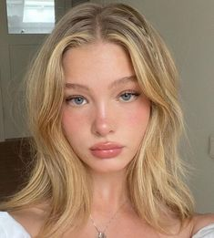

Ingenue Makeup Archetype

Face:
- Flawless Foundation (Light/Medium Coverage): Creates a natural, even-toned base for a youthful look. Explore
- Dewy Finish Primer: Provides a smooth canvas and enhances the youthful, dewy glow. Explore
- Lightweight Foundation: Offers sheer to medium coverage for a natural, non-cakey appearance. Explore
- Radiant Primer: Creates a subtle glow and evens skin tone for a fresh look. Explore
- Natural Flush Blush (Pink/Peach): Adds a hint of healthy color to the cheeks. Explore
- Soft Highlighter: Provides a subtle, natural-looking glow to high points of the face. Explore
Eyes:
- Shimmery Eyeshadow (Neutral/Light Pink/Peach): Offers shades that enhance the eyes without overpowering the youthful vibe. Explore
- Soft Eyeliner (Brown/Taupe): Defines the eyes subtly for a more natural look. Explore
- Lengthening Mascara: Enhances lashes for added definition without appearing dramatic. Explore
- Wispy Lashes (Optional): Adds a touch of flutter for a youthful charm (optional). Explore
Lips:
- Glossy Lipstick (Light Pink/Nude/Berry): Creates a youthful and fresh look with a shiny finish. Explore
- Tinted Lip Balm: Provides a hint of color and keeps lips hydrated. Explore
- Soft Pink/Nude Lipstick: Offers a natural touch of color that complements the youthful ingenue look. Explore
- Lip Gloss: Adds shine and dimension to lips for a natural and youthful effect. Explore